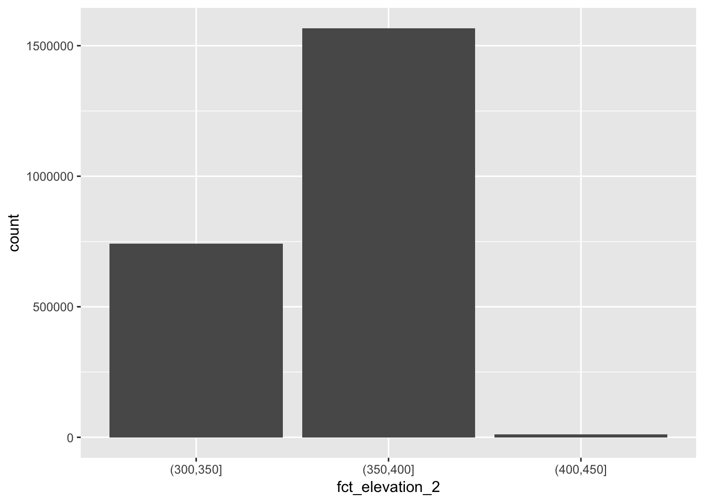
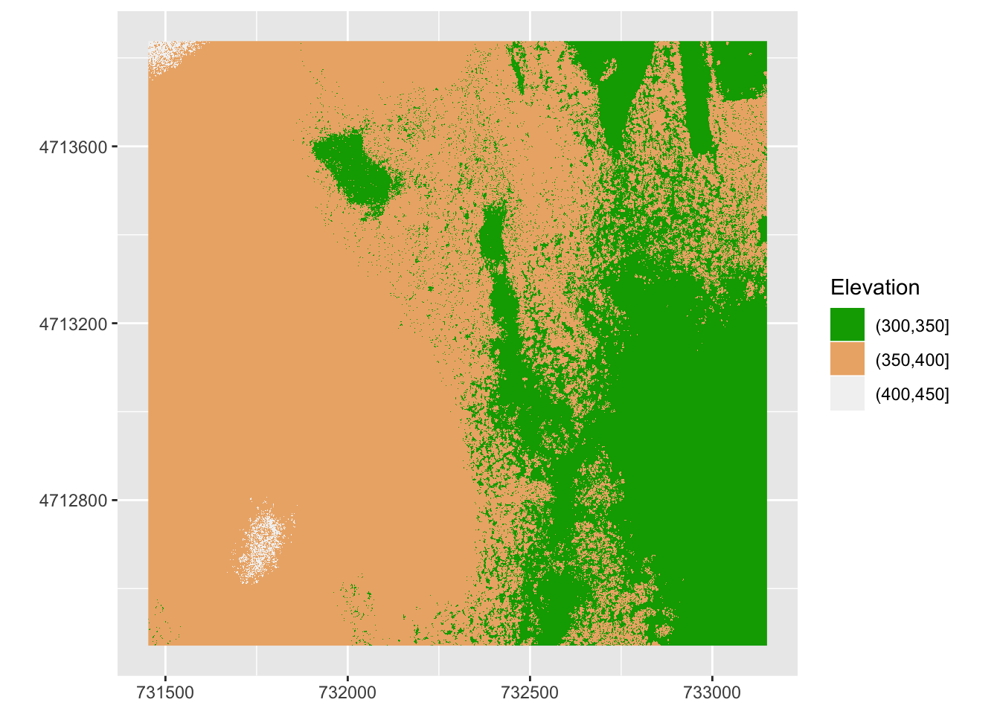
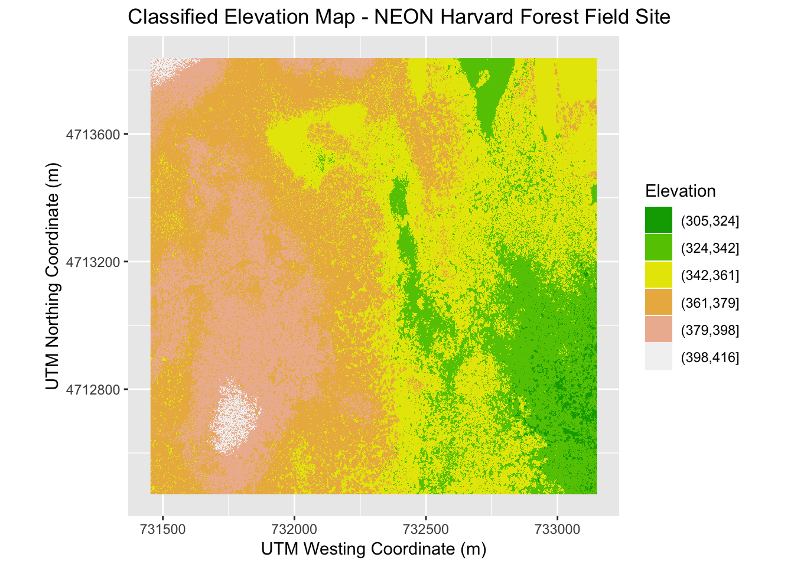

Raster structure
Questions:
- How can I create categorized or customized maps of raster data?
- How can I customize the color scheme of a raster image?
- How can I layer raster data in a single image?
Objectives:
- Build customized plots for a single band raster using the ggplot2 package.
- Layer a raster dataset on top of a hillshade to create an elegant basemap.
This episode covers how to plot a raster in R using the ggplot2 package with customized coloring schemes. It also covers how to layer a raster on top of a hillshade to produce an eloquent map. We will continue working with the Digital Surface Model (DSM) raster for the NEON Harvard Forest Field Site.
Plot Raster Data in R with breaks
In the previous episode, we viewed our data using a continuous color ramp. For clarity and visibility of the plot, we may prefer to view the data “symbolized” or colored according to ranges of values. This is comparable to a “classified” map. To do this, we need to tell ggplot how many groups to break our data into, and where those breaks should be. To make these decisions, it is useful to first explore the distribution of the data using a bar plot. To begin with, we will use dplyr’s mutate() function combined with cut() to split the data into 3 bins.
DSM_HARV_df <- DSM_HARV_df %>% mutate(fct_elevation = cut(HARV_dsmCrop, breaks = 3))
DSM_HARV_df %>%
ggplot() +
geom_bar(aes(fct_elevation))
If we want to know the cutoff values for the groups, we can ask for the unique values of fct_elevation:
unique(DSM_HARV_df$fct_elevation)## [1] (379,416] (342,379] (305,342]
## Levels: (305,342] (342,379] (379,416]And we can get the count of values in each group using dplyr’s group_by() and count() functions:
DSM_HARV_df %>%
group_by(fct_elevation) %>%
count()## # A tibble: 3 x 2
## # Groups: fct_elevation [3]
## fct_elevation n
## <fct> <int>
## 1 (305,342] 418891
## 2 (342,379] 1530073
## 3 (379,416] 370835We might prefer to customize the cutoff values for these groups. Lets round the cutoff values so that we have groups for the ranges of 301–350 m, 351–400 m, and 401–450 m. To implement this we will give mutate() a numeric vector of break points instead of the number of breaks we want.
DSM_HARV_df <- DSM_HARV_df %>%
mutate(fct_elevation_2 = cut(HARV_dsmCrop,
breaks = c(300, 350, 400, 450)))
unique(DSM_HARV_df$fct_elevation_2)## [1] (400,450] (350,400] (300,350]
## Levels: (300,350] (350,400] (400,450]And now we can plot our bar plot again, using the new groups:
ggplot() +
geom_bar(data = DSM_HARV_df, aes(fct_elevation_2))
As we did earlier, we can get the count of values in each group:
DSM_HARV_df %>%
group_by(fct_elevation_2) %>%
count()## # A tibble: 3 x 2
## # Groups: fct_elevation_2 [3]
## fct_elevation_2 n
## <fct> <int>
## 1 (300,350] 741815
## 2 (350,400] 1567316
## 3 (400,450] 10668Using ggplot ploting each group with a different color:
DSM_HARV_df %>%
ggplot() +
geom_raster(aes(x = x, y = y, fill = fct_elevation_2)) +
coord_quickmap()
In the above plot, the default colours are used for the raster objects. We can make the figure nicer by specifying the colours ourselves. We can use a special colour pallette called terrain.colors().
The terrain.colors() function returns hex colors - each of these character strings represents a color. To use these in our map, we pass them across using the scale_fill_manual() function.
terrain.colors(3)## [1] "#00A600FF" "#ECB176FF" "#F2F2F2FF"DSM_HARV_df %>%
ggplot() +
geom_raster(aes(x = x, y = y, fill = fct_elevation_2)) +
scale_fill_manual(values = terrain.colors(3), name = "Elevation") + coord_quickmap() +
# get rid of axes titles (demo this slowly)
theme(axis.title = element_blank())
# Challenge:
#
# Create a plot of the Harvard Forest Digital Surface Model (DSM) that has:
# 1. Six classified ranges of values (break points) that are evenly divided among the range of pixel values.
# 2. Axis labels.
# 3. A plot title.
DSM_HARV_df <- DSM_HARV_df %>%
mutate(fct_elevation_6 = cut(HARV_dsmCrop, breaks = 6))
DSM_HARV_df %>%
ggplot() +
geom_raster(aes(x = x, y = y,fill = fct_elevation_6)) +
scale_fill_manual(values = terrain.colors(6), name = "Elevation") +
ggtitle("Classified Elevation Map - NEON Harvard Forest Field Site") +
xlab("UTM Westing Coordinate (m)") +
ylab("UTM Northing Coordinate (m)") +
coord_quickmap()
Summary
- Continuous data ranges can be grouped into categories using mutate() and cut().
- Use built-in terrain.colors() or set your preferred color scheme manually.
- Layer rasters on top of one another by using the alpha aesthetic.